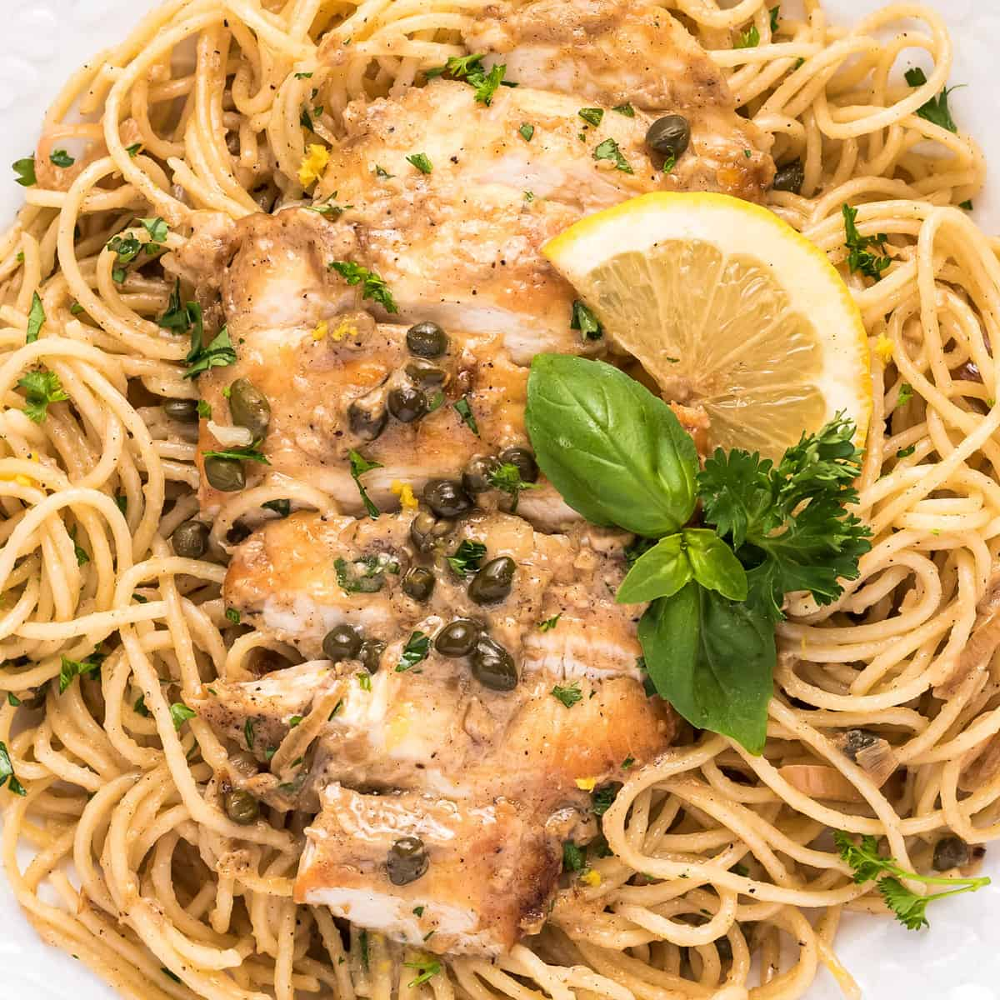

Chicken Piccata

Description
Ingredients
- 2 boneless skinless chicken breasts
- 1/2 tsp kosher salt
- 1/2 tsp black pepper
- 1/4 tsp groud or dried thyme
- 1 tbsp fresh basil
- 1/2 tsp paprika
- 1/2 cup flour
- 2 tbsp unsalted butter
- 1 tbsp olive oil
- 1 shallot
- 3 cloves garlic
- 1/2 cup dry white wine
- 1/2 cup reduced sodium chicken broth
- 1/3 cup lemon juice
- 3 tbsp capers
- 3/4 cup heavy cream
- 1 tbsp cornstarch
- fresh parsley and basil
- 16 oz package thin spaghetti pasta
Steps
- Boil pasta until al dente, according to package directions, then drain and toos with a little olive oil to prevent sticking.
- Add chicken breast to a cutting board. Hold your knife parallel to the board and carefully slice the chicken from right to left (if you’re a righty)… opening the chicken breast up like a book. Slice all the way through, so you now have 2 thinly sliced pieces of chicken. Repeat with other chicken breast.
- Season chicken with salt, pepper, and thyme. Add flour to a shallow bowl, and add basil and paprika, stirring to combine.
- Dredge chicken pieces in flour, then set on a plate.
- Add butter and oil to a large skillet and heat over MED-HIGH heat. Once hot, add chicken, 2 pieces at at time, and cook for about 4 minutes per side, or until chicken is golden brown and cooked through. Remove chicken to a plate and repeat with remaining chicken pieces. Watch the chicken as it cooks, and if it looks like it's getting too brown too quickly, reduce your heat a little.
- Reduce skillet heat to MED. Add shallots and garlic and cook 1 minute, stirring often.
- Stir in wine, scraping the bottom to loosen any browned bits. Cook for 2 minutes over MED heat.
- Stir in chicken broth, lemon juice and capers. Bring sauce to a low boil and then simmer for 3-5 minutes.
- In a small mixing bowl, whisk together heavy cream and cornstarch until smooth. Stir mixture into sauce and cook 2-3 minutes, or until thickened to a sauce that will easily coat the back of a spoon.
- Return chicken pieces to skillet and coat with sauce. Add a few lemon wedges if you'd like.
- Serve chicken sliced, over a bed of pasta that’s been tossed with plenty of sauce and sprinkled with lemon zest, parsley, and basil. Or you can serve the chicken as is, with some vegetables alongside.
Return to Main Page